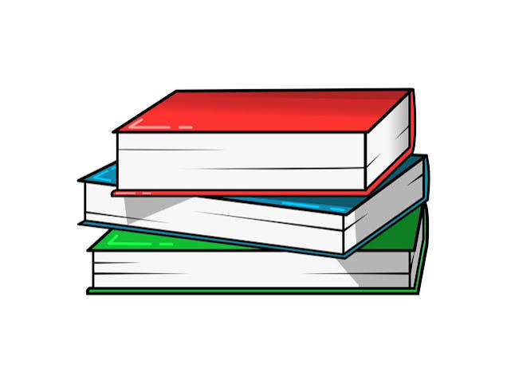
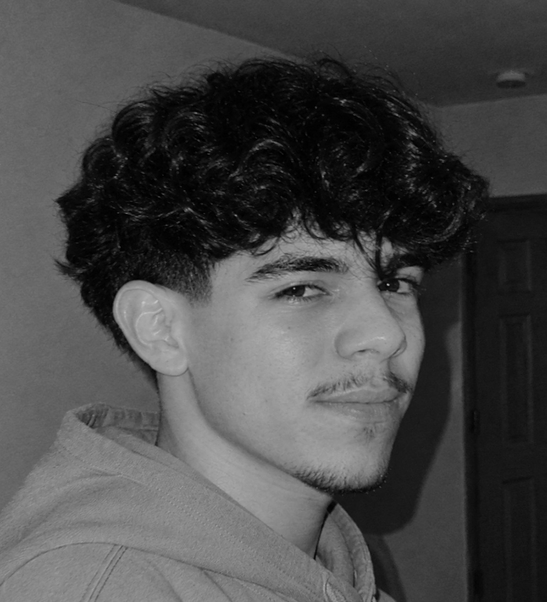
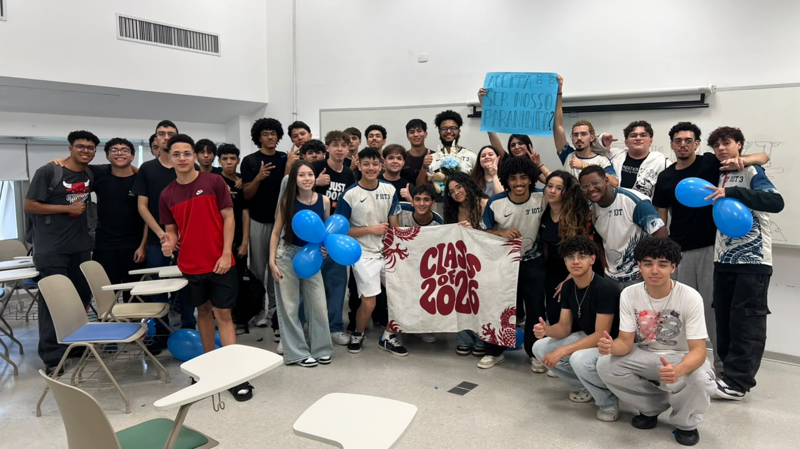

Áreas do Saber
Registros das disciplinas e dos aprendizados da formação geral.
Ver áreasMeu portfólio pessoal
Este espaço é meu portfólio de aprendizagem. Aqui registro minha trajetória, os conhecimentos que desenvolvo, meus projetos e os momentos importantes da vida escolar.


Registros das disciplinas e dos aprendizados da formação geral.
Ver áreas
Projetos de programação, banco de dados, automação e tecnologia.
Ver projetosFormação, habilidades, experiências e certificados.
Abrir currículo
Momentos especiais, atividades, eventos e trabalhos em equipe.
Ver memóriasEtapa 1 • 1º Ano
Montagem de computadores, estudo de peças e componentes, além de introdução a programação de Arduinos.
Etapa 2 • 2º Ano
Estudo de protocolos, topologias de rede, práticas com Cisco e configuração de dispositivos IoT, como Alexa, lâmpadas e fechaduras inteligentes.
Etapa 3 • 3º Ano/p>
Desenvolvimento web full-stack (front-end, back-end e banco de dados) integrado à montagem e programação de projetos com Arduino.
Etapa 4 • Próximo Nível
Entrar no ensino superior em cursos com foco em desenvolvimento full-stack, arquitetura de software e segurança cibernética.
Quero aprofundar meus conhecimentos em arquitetura de software, desenvolvimento web e segurança da informação na graduação. Tenho grande interesse nas áreas de programação full-stack, cibersegurança e automação com IoT. No futuro, pretendo usar essa base para atuar remotamente como desenvolvedor, criando aplicações completas, eficientes e seguras.